산업안전기사 (2021-05-15 기출문제)
1과목: 안전관리론
1. 학습자가 자신의 학습속도에 적합하도록 프로그램 자료를 가지고 단독으로 학습하도록 하는 안전교육 방법은?
- 실연법
- 모의법
- 토의법
- 프로그램 학습법
(정답률: 90%)

2. 헤드십의 특성이 아닌 것은?
- 지휘형태는 권위주의적이다.
- 권한행사는 임명된 헤드이다.
- 구성원과의 사회적 간격은 넓다
- 상관과 부하와의 관계는 개인적인 영향이다
(정답률: 84%)
3. 산업안전보건법령상 특정행위의 지시 및 사실의 고지에 사용되는 안전 ⸱ 보건표지의 색도기준으로 옳은 것은?
- 2.5G 4/10
- 5Y 8.5/12
- 2.5PB 4/10
- 7.5R 4/14
(정답률: 75%)
4. 인간관계의 메커니즘 중 다른 사람의 행동 양식이나 태도를 투입시키거나 다른 사람 가운데서 자기와 비슷한 것을 발견하는 것은?
- 공감
- 모방
- 동일화
- 일체화
(정답률: 77%)
5. 다음의 교육내용과 관련 있는 교육은?
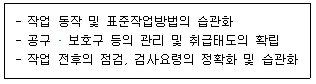
- 지식교육
- 기능교육
- 태도교육
- 문제해결교육
(정답률: 76%)
6. 데이비스(K.Davis)의 동기부여 이론에 관한 등식에서 그 관계가 틀린 것은?
- 지식 x 기능 = 능력
- 상황 x 능력 = 동기유발
- 능력 x 동기유발 = 인간의 성과
- 인간의 성과 x 물질의 성과 = 경영의 성과
(정답률: 75%)
7. 산업안전보건법령상 보호구 안전인증 대상 방독마스크의 유기화합물용 정화통 외부 측면 표시 색으로 옳은 것은?
- 갈색
- 녹색
- 회색
- 노랑색
(정답률: 70%)
8. 재해원인 분석기법의 하나인 특성요인도의 작성 방법에 대한 설명으로 틀린 것은?
- 큰뼈는 특성이 일어나는 요인이라고 생각되는 것을 크게 분류하여 기입한다.
- 등뼈는 원칙정에서 우측에서 좌측으로 향하여 가는 화살표를 기입한다.
- 특성의 결정은 무엇에 대한 특성요인도를 작성할 것인가를 결정하고 기입한다.
- 중뼈는 특성이 일어나는 큰뼈의 요인마다 다시 미세하게 원인을 결정하여 기입한다.
(정답률: 82%)
9. TWI의 교육 내용 중 인간관계 관리방법 즉 부하 통솔법을 주로 다루는 것은?
- JST(Job Safety Training)
- JMT(Job Method Training)
- JRT(Job Relation Training)
- JIT(Job Instruction Training)
(정답률: 73%)
10. 산업안전보건법령상 안전보건관리규정에 반드시 포함되어야 할 사항이 아닌 것은? (단, 그 밖에 안전 및 보건에 관한 사항은 제외한다.)
- 재해코스트 분석 방법
- 사고 조사 및 대책 수립
- 작업장 안전 및 보건관리
- 안전 및 보건 관리조직과 그 직무
(정답률: 74%)
11. 재해조사에 관한 설명으로 틀린 것은?
- 조사목적에 무관한 조사는 피한다.
- 조사는 현장을 정리한 후에 실시한다.
- 목격자나 현장 책임자의 진술을 듣는다.
- 조사자는 객관적이고 공정한 입장을 취해야 한다.
(정답률: 88%)
12. 산업안전보건법령상 안전보건표지의 종류 중 경고표지의 기본모형(형태)이 다른 것은?
- 고압전기 경고
- 방사성물질 경고
- 폭발성물질 경고
- 매달린 물체 경고
(정답률: 64%)
13. 무재해운동 추진의 3요소에 관한 설명이 아닌 것은?
- 안전보건은 최고경영자의 무재해 및 무질병에 대한 확고한 경영자세로 시작된다.
- 안전보건을 추진하는 데에는 관리감독자들의 생산 활동 속에 안전보건을 실천하는 것이 중요하다.
- 모든 재해는 잠재요인을 사전에 발견⸱파악⸱해결함으로써 근원적으로 산업재해를 없애야한다.
- 안전보건은 각자 자신의 문제이며, 동시에 동료의 문제로서 직장의 팀 멤버와 협동 노력하여 자주적으로 추진하는 것이 필요하다.
(정답률: 60%)
14. 헤링(Hering)의 착시현상에 해당하는 것은?
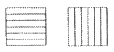
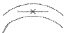
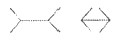
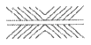
(정답률: 71%)
15. 도수율이 24.5이고, 강도율이 1.15인 사업장에서 한 근로자가 입사하여 퇴직할 때까지의 근로손실일수는?
- 2.45일
- 115일
- 215일
- 245일
(정답률: 59%)
16. 학습을 자극(Stimulus)에 의한 반응(Response)으로 보는 이론에 해당하는 것은?
- 장설(Field Theory)
- 통찰설(Insight Theory)
- 기호형태설(Sign-gestalt Theory)
- 시행착오설(Trial and Error Theory)
(정답률: 68%)
17. 하인리히의 사고방지 기본원리 5단계 중 시정방법의 선정 단계에 있어서 필요한 조치가 아닌 것은?
- 인사조정
- 안전행정의 개선
- 교육 및 훈련의 개선
- 안전점검 및 사고조사
(정답률: 51%)
18. 산업안전보건법령상 안전보건교육 교육대상별 교육내용 중 관리감독자 정기교육의 내용으로 틀린 것은?
- 정리정돈 및 청소에 관한 사항
- 유해⸱위험 작업환경 관리에 관한 사항
- 표준안전작업방법 및 지도 요령에 관한 사항
- 작업공정의 유해⸱위험과 재해 예방대책에 관한 사항
(정답률: 79%)
19. 산업안전보건법령상 협의체 구성 및 운영에 관한 사항으로 ( )에 알맞은 내용은?
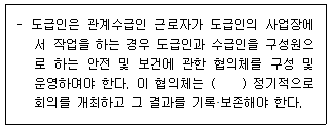
- 매월 1회 이상
- 2개월마다 1회
- 3개월마다 1회
- 6개월마다 1회
(정답률: 67%)
20. 산업안전보건법령상 프레스를 사용하여 작업을 할 때 작업시작 전 점검사항으로 틀린 것은?
- 방호장치의 기능
- 언로드밸브의 기능
- 금형 및 고정볼트 상태
- 클러치 및 브레이크의 기능
(정답률: 81%)
2과목: 인간공학 및 시스템안전공학
21. 일반적으로 은행의 접수대 높이나 공원의 벤치를 설계할 때 가장 적합한 인체 측정 자료의 응용원칙은?
- 조절식 설계
- 평균치를 이용한 설계
- 최대치수를 이용한 설계
- 최소치수를 이용한 설계
(정답률: 78%)
22. 위험분석기법 중 고장이 시스템의 손실과 인명의 사상에 연결되는 높은 위험도를 가진 요소나 고장의 형태에 따른 분석법은?
- CA
- ETA
- FHA
- FTA
(정답률: 54%)
23. 작업장의 설비 3대에서 각각 80 dB, 86 dB, 78 dB의 소음이 발생되고 있을 때 작업장의 음압 수준은?
- 약 81.3 dB
- 약 85.5 dB
- 약 87.5 dB
- 약 90.3 dB
(정답률: 39%)
24. 일반적인 화학설비에 대한 안전성 평가(safety assessment) 절차에 있어 안전대책 단계에 해당되지 않는 것은?
- 보전
- 위험도 평가
- 설비적 대책
- 관리적 대책
(정답률: 55%)
25. 욕조곡선에서의 고장 형태에서 일정한 형태의 고장률이 나타나는 구간은?
- 초기 고장구간
- 마모 고장구간
- 피로 고장구간
- 우발 고장구간
(정답률: 69%)
26. 음량수준을 평가하는 척도와 관계없는 것은?
- dB
- HSI
- phon
- sone
(정답률: 82%)
27. 실효 온도(effective temperature)에 영향을 주는 요인이 아닌 것은?
- 온도
- 습도
- 복사열
- 공기 유동
(정답률: 57%)
28. FT도에서 시스템의 신뢰도는 얼마인가? (단, 모든 부품의 발생확률은 0.1 이다.)
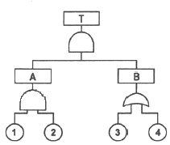
- 0.0033
- 0.0062
- 0.9981
- 0.9936
(정답률: 69%)
29. 인간공학 연구방법 중 실제의 제품이나 시스템이 추구하는 특성 및 수준이 달성되는지를 비교하고 분석하는 연구는?
- 조사연구
- 실험연구
- 분석연구
- 평가연구
(정답률: 53%)
30. 어떤 설비의 시간당 고장률이 일정하다고 할 때 이 설비의 고장간격은 다음 중 어떤 확률분포를 따르는가?
- t분포
- 와이블분포
- 지수분포
- 아이링(Eyring)분포
(정답률: 73%)
31. 시스템 수명주기에 있어서 예비위험분석(PHA)이 이루어지는 단계에 해당하는 것은?
- 구상단계
- 점검단계
- 운전단계
- 생산단계
(정답률: 75%)
32. FTA에서 사용하는 다음 사상기호에 대한 설명으로 맞는 것은?
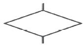
- 시스템 분석에서 좀 더 발전시켜야 하는 사상
- 시스템의 정상적인 가동상태에서 일어날 것이 기대되는 사상
- 불충분한 자료로 결론을 내릴 수 없어 더 이상 전개 할 수 없는 사상
- 주어진 시스템의 기본사상으로 고장원인이 분석되었기 때문에 더 이상 분석할 필요가 없는 사상
(정답률: 71%)
33. 정보를 전송하기 위해 청각적 표시장치보다 시각적 표시장치를 사용하는 것이 더 효과적인 경우는?
- 정보의 내용이 간단한 경우
- 정보가 후에 재참조되는 경우
- 정보가 즉각적인 행동을 요구하는 경우
- 정보의 내용이 시간적인 사건을 다루는 경우
(정답률: 72%)
34. 감각저장으로부터 정보를 작업기억으로 전달하기 위한 코드화 분류에 해당되지 않는 것은?
- 시각코드
- 촉각코드
- 음성코드
- 의미코드
(정답률: 49%)
35. 인간-기계시스템 설계과정 중 직무분석을 하는 단계는?
- 제1단계 : 시스템의 목표와 성능명세 결정
- 제2단계 : 시스템의 정의
- 제3단계 : 기본 설계
- 제4단계 : 인터페이스 설계
(정답률: 65%)
36. 중량물 들기 작업 시 5분간의 산소소비량을 측정한 결과 90L의 배기량 중에 산소가 16%, 이산화탄소가 4%로 분석되었다. 해당 작업에 대한 산소소비량(L/min)은 약 얼마인가? (단, 공기 중 질소는 79vol%, 산소는 21vol%이다.)
- 0.948
- 1.948
- 4.74
- 5.74
(정답률: 31%)
37. 의도는 올바른 것이었지만, 행동이 의도한 것과는 다르게 나타나는 오류는?
- Slip
- Mistake
- Lapse
- Violation
(정답률: 68%)
38. 동작경제의 원칙과 가장 거리가 먼 것은?
- 급작스런 방향의 전환은 피하도록 할 것
- 가능한 관성을 이용하여 작업하도록 할 것
- 두 손의 동작은 같이 시작하고 같이 끝나도록 할 것
- 두 팔의 동작은 동시에 같은 방향으로 움직일 것
(정답률: 73%)
39. 두 가지 상태 중 하나가 고장 또는 결함으로 나타나는 비정상적인 사건은?
- 톱사상
- 결함사상
- 정상적인 사상
- 기본적인 사상
(정답률: 80%)
40. 설비보전 방법 중 설비의 열화를 방지하고 그 진행을 지연시켜 수명을 연장하기 위한 점검, 청소, 주유 및 교체 등의 활동은?
- 사후 보전
- 개량 보전
- 일상 보전
- 보전 예방
(정답률: 63%)
3과목: 기계위험방지기술
41. 산업안전보건법령상 보일러 수위가 이상현상으로 인해 위험수위로 변하면 작업자가 쉽게 감지할 수 있도록 경보등, 경보음을 발하고 자동적으로 급수 또는 단수되어 수위를 조절하는 방호장치는?
- 압력방출장치
- 고저수위 조절장치
- 압력제한 스위치
- 과부하방지장치
(정답률: 79%)
42. 프레스 작업에서 제품 및 스크랩을 자동적으로 위험한계 밖으로 배출하기 위한 장치로 틀린것은?
- 피더
- 키커
- 이젝터
- 공기 분사 장치
(정답률: 62%)
43. 산업안전보건법령상 로봇의 작동범위 내에서 그 로봇에 관하여 교시 등 작업을 행하는 때 작업시작 전 점검 사항으로 옳은 것은? (단, 로봇의 동력원을 차단하고 행하는 것은 제외)
- 과부하방지장치의 이상 유무
- 압력제한스위치의 이상 유무
- 외부 전선의 피복 또는 외장의 손상 유무
- 권과방지장치의 이상 유무
(정답률: 72%)
44. 산업안전보건법령상 지게차 작업시작 전 점검사항으로 거리가 가장 먼 것은?
- 제동장치 및 조종장치 기능의 이상 유무
- 압력방출장치의 작동 이상 유무
- 바퀴의 이상 유무
- 전조등⸱후미등⸱방향지시기 및 경보장치 기능의 이상 유무
(정답률: 82%)
45. 다음 중 가공재료의 칩이나 절삭유 등이 비산되어 나오는 위험으로부터 보호하기 위한 선반의 방호장치는?
- 바이트
- 권과방지장치
- 압력제한스위치
- 쉴드(shield)
(정답률: 81%)
46. 산업안전보건법령상 보일러의 압력방출장치가 2개 설치된 경우 그 중 1개는 최고사용압력이하에서 작동된다고 할 때 다른 압력방출장치는 최고사용압력의 최대 몇 배 이하에서 작동되도록 하여야 하는가?
- 0.5
- 1
- 1.⑤
- 2
(정답률: 75%)
47. 상용운전압력 이상으로 압력이 상승할 경우 보일러의 파열을 방지하기 위하여 버너의 연소를 차단하여 정상압력으로 유도하는 장치는?
- 압력방출장치
- 고저수위 조절장치
- 압력제한 스위치
- 통풍제어 스위치
(정답률: 74%)
48. 용접부 결함에서 전류가 과대하고, 용접속도가 너무 빨라 용접부의 일부가 홈 또는 오목하게 생기는 결함은?
- 언더컷
- 기공
- 균열
- 융합불량
(정답률: 75%)
49. 물체의 표면에 침투력이 강한 적색 또는 형광성의 침투액을 표면 개구 결함에 침투시켜 직접 또는 자외선 등으로 관찰하여 결함장소와 크기를 판별하는 비파괴시험은?
- 피로시험
- 음향탐상시험
- 와류탐상시험
- 침투탐상시험
(정답률: 79%)
50. 연삭숫돌의 파괴원인으로 거리가 가장 먼 것은?
- 숫돌이 외부의 큰 충격을 받았을 때
- 숫돌의 회전속도가 너무 빠를 때
- 숫돌 자체에 이미 균열이 있을 때
- 플랜지 직경이 숫돌 직경의 1/3 이상일 때
(정답률: 81%)
51. 산업안전보건법령상 프레스 등 금형을 부착⸱해체 또는 조정하는 작업을 할 때, 슬라이드가 갑자기 작동함으로써 근로자에게 발생할 우려가 있는 위험을 방지하기 위해 사용해야 하는 것은? (단, 해당 작업에 종사하는 근로자의 신체가 위험한계 내에 있는 경우)
- 방진구
- 안전블록
- 시건장치
- 날접촉예방장치
(정답률: 78%)
52. 페일 세이프(fail safe)의 기능적인 면에서 분류할 때 거리가 가장 먼 것은?
- Fool proof
- Fail passive
- Fail active
- Fail operational
(정답률: 74%)
53. 산업안전보건법령상 크레인에서 정격하중에 대한 정의는? (단, 지브가 있는 크레인은 제외)
- 부하할 수 있는 최대하중
- 부하할 수 있는 최대하중에서 달기기구의 중량에 상당하는 하중을 뺀 하중
- 짐을 싣고 상승할 수 있는 최대하중
- 가장 위험한 상태에서 부하할 수 있는 최대하중
(정답률: 75%)
54. 기계설비의 안전조건인 구조의 안전화와 거리가 가장 먼 것은?
- 전압 강하에 따른 오동작 방지
- 재료의 결함 방지
- 설계상의 결함 방지
- 가공 결함 방지
(정답률: 47%)
55. 공기압축기의 작업안전수칙으로 가장 적절하지 않은 것은?
- 공기압축기의 점검 및 청소는 반드시 전원을 차단한 후에 실시한다.
- 운전 중에 어떠한 부품도 건드려서는 안 된다.
- 공기압축기 분해 시 내부의 압축공기를 이용하여 분해한다.
- 최대공기압력을 초과한 공기압력으로는 절대로 운전하여서는 안 된다.
(정답률: 81%)
56. 산업안전보건법령상 컨베이어, 이송용 롤러 등을 사용하는 경우 정전⸱전압강하 등에 의한 위험을 방지하기 위하여 설치하는 안전장치는?
- 권과방지장치
- 동력전달장치
- 과부하방지장치
- 화물의 이탈 및 역주행 방지장치
(정답률: 65%)
57. 회전하는 동작부분과 고정부분이 함께 만드는 위험점으로 주로 연삭숫돌과 작업대, 교반기의 교반날개와 몸체사이에서 형성되는 위험점은?
- 협착점
- 절단점
- 물림점
- 끼임점
(정답률: 65%)
58. 다음 중 드릴 작업의 안전사항으로 틀린 것은?
- 옷소매가 길거나 찢어진 옷은 입지 않는다.
- 작고, 길이가 긴 물건은 손으로 잡고 뚫는다.
- 회전하는 드릴에 걸레 등을 가까이 하지 않는다.
- 스핀들에서 드릴을 뽑아낼 때에는 드릴 아래에 손을 내밀지 않는다.
(정답률: 84%)
59. 산업안전보건법령상 양중기의 과부하방지장치에서 요구하는 일반적인 성능기준으로 가장 적절하지 않은 것은?
- 과부하방지장치 작동 시 경보음과 경보램프가 작동되어야 하며 양중기는 작동이 되지 않아야 한다.
- 외함의 전선 접촉부분은 고무 등으로 밀폐되어 물과 먼지 등이 들어가지 않도록 한다.
- 과부하방지장치와 타 방호장치는 기능에 서로 장애를 주지 않도록 부착할 수 있는 구조이어야 한다.
- 방호장치의 기능을 정지 및 제거할 때 양중기의 기능이 동시에 원활하게 작동하는 구조이며 정지해서는 안 된다.
(정답률: 79%)
60. 프레스기의 SPM(stroke per minute)이 200이고, 클러치의 맞물림 개소수가 6인 경우 양수기동식 방호장치의 안전거리는?
- 120 mm
- 200 mm
- 320 mm
- 400 mm
(정답률: 46%)
4과목: 전기위험방지기술
61. 폭발한계에 도달한 메탄가스가 공기에 혼합되었을 경우 착화한계전압(V)은 약 얼마인가? (단, 메탄의 착화최소에너지는 0.2mJ, 극간용량은 10pF으로 한다.)
- 6325
- 5225
- 4135
- 3035
(정답률: 45%)
62. Q = 2X10-7 C 으로 대전하고 있는 반경 25 cm 도체구의 전위(kV)는 약 얼마인가?
- 7.2
- 12.5
- 14.4
- 25
(정답률: 31%)
63. 다음 중 누전차단기를 시설하지 않아도 되는 전로가 아닌 것은? (단, 전로는 금속제 외함을 가지는 사용전압이 50V를 초과하는 저압의 기계기구에 전기를 공급하는 전로이며, 기계기구에는 사람이 쉽게 접촉할 우려가 있다.)
- 기계기구를 건조한 장소에 시설하는 경우
- 기계기구가 고무, 합성수지, 기타 절연물로 피복된 경우
- 대지전압 200V 이하인 기계기구를 물기가 있는 곳 이외의 곳에 시설하는 경우
- 「전기용품 및 생활용품 안전관리법」의 적용을 받는 이중절연구조의 기계기구를 시설하는 경우
(정답률: 64%)
64. 고압전로에 설치된 전동기용 고압전류 제한퓨즈의 불용단전류의 조건은?
- 정격전류 1.3배의 전류로 1시간 이내에 용단되지 않을 것
- 정격전류 1.3배의 전류로 2시간 이내에 용단되지 않을 것
- 정격전류 2배의 전류로 1시간 이내에 용단되지 않을 것
- 정격전류 2배의 전류로 2시간 이내에 용단되지 않을 것
(정답률: 45%)
65. 누전차단기의 시설방법 중 옳지 않은 것은?
- 시설장소는 배전반 또는 분전반 내에 설치한다.
- 정격전류용량은 해당 전로의 부하전류 값 이상이어야 한다.
- 정격감도전류는 정상의 사용상태에서 불필요하게 동작하지 않도록 한다.
- 인체감전보호형은 0.⑤초 이내에 동작하는 고감도고속형이어야 한다.
(정답률: 73%)
66. 정전기 방지대책 중 적합하지 않는 것은?
- 대전서열이 가급적 먼 것으로 구성한다.
- 카본 블랙을 도포하여 도전성을 부여한다.
- 유속을 저감 시킨다.
- 도전성 재료를 도포하여 대전을 감소시킨다.
(정답률: 61%)
67. 다음 중 방폭전기기기의 구조별 표시방법으로 틀린 것은?
- 내압방폭구조 : p
- 본질안전방폭구조 : ia, ib
- 유입방폭구조 : o
- 안전증방폭구조 : e
(정답률: 63%)
68. 내접압용절연장갑의 등급에 따른 최대사용전압이 틀린 것은? (단, 교류 전압은 실효값이다.)
- 등급 00 :교류 500 V
- 등급 1 :교류 7500 V
- 등급 2 :직류 17000 V
- 등급 3 :직류 39750 V
(정답률: 45%)
69. 저압전로의 절연성능에 관한 설명으로 적합하지 않는 것은?
- 전로의 사용전압이 SELV 및 PELV 일 때 절연저항은 0.5MΩ 이상이어야 한다.
- 전로의 사용전압이 FELV 일 때 절연저항은 1MΩ 이상이어야 한다.
- 전로의 사용전압이 FELV 일 때 DC 시험 전압은 500 V이다
- 전로의 사용전압이 600 V 일 때 절연저항은 1.5MΩ 이상이어야 한다.
(정답률: 48%)
70. 다음 중 0종 장소에 사용될 수 있는 방폭구조의 기호는?
- Ex ia
- Ex ib
- Ex d
- Ex e
(정답률: 56%)
71. 다음 중 전기화재의 주요 원인이라고 할 수 없는 것은?
- 절연전선의 열화
- 정전기 발생
- 과전류 발생
- 절연저항값의 증가
(정답률: 75%)
72. 배전선로에 정전작업 중 단락 접지기구를 사용하는 목적으로 가장 적합한 것은?
- 통신선 유도 장해 방지
- 배전용 기계 기구의 보호
- 배전선 통전 시 전위경도 저감
- 혼촉 또는 오동작에 의한 감전방지
(정답률: 69%)
73. 어느 변전소에서 고장전류가 유입되었을 때 도전성 구조물과 그 부근 지표상의 점과의 사이(약 1m)의 허용접촉전압은 약 몇 V 인가? (단, 심실세동전류:
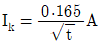
, 인체의 저항:1000Ω, 지표면의 저향률: 150Ω⸱m, 통전시간을 1초로 한다.)- 164
- 186
- 202
- 228
(정답률: 38%)
74. 방폭기기 그룹에 관한 설명으로 틀린 것은?
- 그룹Ⅰ, 그룹 Ⅱ, 그룹 Ⅲ가 있다.
- 그룹Ⅰ의 기기는 폭발성 갱내 가스에 취약한 광산에서의 사용을 목적으로 한다.
- 그룹 Ⅱ의 세부 분류로 ⅡA, ⅡB, ⅡC가 있다.
- ⅡA로 표시된 기기는 그룹 ⅡB기기를 필요로 하는 지역에 사용할 수 있다.
(정답률: 63%)
75. 한국전기설비규정에 따라 피뢰설비에서 외부피뢰시스템의 수뢰부시스템으로 적합하지 않는 것은?
- 돌침
- 수평도체
- 메시도체
- 환상도체
(정답률: 53%)
76. 정전기 재해의 방지를 위하여 배관 내 액채의 유속 제한이 필요하다. 배관의 내경과 유속 제한 값으로 적절하지 않은 것은?
- 관내경(mm): 25, 제한유속(m/s): 6.5
- 관내경(mm): 50, 제한유속(m/s): 3.5
- 관내경(mm): 100, 제한유속(m/s): 2.5
- 관내경(mm): 200, 제한유속(m/s): 1.8
(정답률: 42%)
77. 지락이 생긴 경우 접촉상태에 따라 접촉전압을 제한할 필요가 있다. 인체의 접촉상태에 따른 허용접촉전압을 나타낸 것으로 다음 중 옳지 않은 것은?
- 제1종: 2.5V 이하
- 제2종: 25V 이하
- 제3종: 35V 이하
- 제4종: 제한 없음
(정답률: 67%)
78. 계통접지로 적합하지 않는 것은?
- TN계통
- TT계통
- IN계통
- IT계통
(정답률: 56%)
79. 정전기 발생에 영향을 주는 요인이 아닌 것은?
- 물체의 분리속도
- 물체의 특성
- 물체의 접촉시간
- 물체의 표면상태
(정답률: 63%)
80. 정전기재해의 방지대책에 대한 설명으로 적합하지 않는 것은?
- 접지의 접속은 납땜, 용접 또는 멈춤나사로 실시한다.
- 회전부품의 유막저항이 높으면 도전성의 윤활제를 사용한다.
- 이동식의 용기는 절연성 고무제 바퀴를 달아서 폭발위험을 제거한다.
- 폭발의 위험이 있는 구역은 도전성 고무류로 바닥 처리를 한다.
(정답률: 49%)
5과목: 화학설비위험방지기술
81. 산업안전보건법령상 특수화학설비를 설치할 때 내부의 이상상태를 조기에 파악하기 위하여 필요한 계측장치를 설치하여야 한다. 이러한 계측장치로 거리가 먼 것은?
- 압력계
- 유량계
- 온도계
- 비중계
(정답률: 75%)
82. 불연성이지만 다른 물질의 연소를 돕는 산화성 액체 물질에 해당하는 것은?
- 히드라진
- 과염소산
- 벤젠
- 암모니아
(정답률: 64%)
83. 아세톤에 대한 설명으로 틀린 것은?
- 증기는 유독하므로 흡입하지 않도록 주의해야 한다.
- 무색이고 휘발성이 강한 액체이다.
- 비중이 0.79 이므로 물보다 가볍다.
- 인화점이 20℃이므로 여름철에 인화 위험이 더 높다.
(정답률: 70%)
84. 화학물질 및 물리적 인자의 노출기준에서 정한 유해인자에 대한 노출기준의 표시단위가 잘못 연결된 것은?
- 에어로졸 : ppm
- 증기 : ppm
- 가스 : ppm
- 고온 : 습구흑구온도지수(WBGT)
(정답률: 55%)
85. 다음 [표]를 참조하여 메탄 70vol%, 프로판 21vol%, 부탄 9vol%인 혼합가스의 폭발범위를 구하면 약 몇 vol%인가?
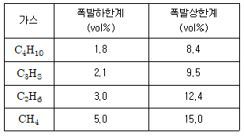
- 3.45~9.11
- 3.45~12.58
- 3.85~9.11
- 3.85~12.58
(정답률: 64%)
86. 산업안전보건법령상 위험물질의 종류를 구분할 때 다음 물질들이 해당하는 것은?
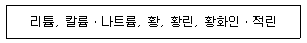
- 폭발성 물질 및 유기과산화물
- 산화성 액체 및 산화성 고체
- 물반응성 물질 및 인화성 고체
- 급성 독성 물질
(정답률: 71%)
87. 제1종 분말소화약제의 주성분에 해당하는 것은?
- 사염화탄소
- 브롬화메탄
- 수산화암모늄
- 탄산수소나트륨
(정답률: 62%)
88. 탄화칼슘이 물과 반응하였을 때 생성물을 옳게 나타낸 것은?
- 수산화칼슘 + 아세틸렌
- 수산화칼슘 + 수소
- 염화칼슘 + 아세틸렌
- 염화칼슘 + 수소
(정답률: 51%)
89. 다음 중 분진 폭발의 특징으로 옳은 것은?
- 가스폭발보다 연소시간이 짧고, 발생에너지가 작다.
- 압력의 파급속도보다 화염의 파급속도가 빠르다.
- 가스폭발에 비하여 불완전 연소의 발생이 없다.
- 주위의 분진에 의해 2차, 3차의 폭발로 파급될 수 있다.
(정답률: 73%)
90. 가연성 가스 A의 연소범위를 2.2~9.5vol% 라 할 때 가스 A의 위험도는 얼마인가?
- 2.52
- 3.32
- 4.91
- 5.64
(정답률: 66%)
91. 다음 중 증기배관내에 생성된 증기의 누설을 막고 응축수를 자동적으로 배출하기 위한 안전장치는?
- Steam trap
- Vent stack
- Blow down
- Flame arrester
(정답률: 70%)
92. CF3Br 소화약제의 하론 번호를 옳게 나타낸 것은?
- 하론 1031
- 하론 1311
- 하론 1301
- 하론 1310
(정답률: 71%)
93. 산업안전보건법령에 따라 공정안전보고서에 포함해야 할 세부내용 중 공정안전자료에 해당하지 않는 것은?
- 안전운전지침서
- 각종 건물ㆍ설비의 배치도
- 유해하거나 위험한 설비의 목록 및 사양
- 위험설비의 안전설계 ⸱ 제작 및 설치관련 지침서
(정답률: 54%)
94. 산업안전보건법령상 단위공정시설 및 설비로부터 다른 단위공정 시설 및 설비사이의 안전거리는 설비의 바깥 면부터 얼마 이상이 되어야 하는가?
- 5m
- 10m
- 15m
- 20m
(정답률: 68%)
95. 자연발화 성질을 갖는 물질이 아닌 것은?
- 질화면
- 목탄분말
- 아마인유
- 과염소산
(정답률: 52%)
96. 다음 중 왕복펌프에 속하지 않는 것은?
- 피스톤 펌프
- 플런저 펌프
- 기어 펌프
- 격막 펌프
(정답률: 62%)
97. 두 물질을 혼합하면 위험성이 커지는 경우가 아닌 것은?
- 이황화탄소+물
- 나트륨+물
- 과산화나트륨+염산
- 염소산칼륨+적린
(정답률: 55%)
98. 5% NaOH 수용액과 10% NaOH 수용액을 반응기에 혼합하여 6% 100kg의 NaOH 수용액을 만들려면 각각 몇 kg의 NaOH 수용액이 필요한가?
- 5% NaOH 수용액: 33.3, 10% NaOH 수용액: 66.7
- 5% NaOH 수용액: 50, 10% NaOH 수용액: 50
- 5% NaOH 수용액: 66.7, 10% NaOH 수용액: 33.3
- 5% NaOH 수용액: 80, 10% NaOH 수용액: 20
(정답률: 52%)
99. 다음 중 노출기준(TWA, ppm) 값이 가장 작은 물질은?
- 염소
- 암모니아
- 에탄올
- 메탄올
(정답률: 56%)
100. 산업안전보건법령에 따라 위험물 건조설비 중 건조실을 설치하는 건축물의 구조를 독립된 단층 건물로 하여야 하는 건조설비가 아닌 것은?
- 위험물 또는 위험물이 발생하는 물질을 가열⸱건조하는 경우 내용적이 2m3 인 건조설비
- 위험물이 아닌 물질을 가열ㆍ건조하는 경우 액체연료의 최대사용량이 5kg/h 인 건조설비
- 위험물이 아닌 물질을 가열ㆍ건조하는 경우 기체연료의 최대사용량이 2m3/h 인 건조설비
- 위험물이 아닌 물질을 가열ㆍ건조하는 경우 전기사용 정격용량이 20kW 인 건조설비
(정답률: 39%)
6과목: 건설안전기술
101. 부두ㆍ안벽 등 하역작업을 하는 장소에서 부두 또는 안벽의 선을 따라 통로를 설치하는 경우에는 폭을 최소 얼마 이상으로 하여야 하는가?
- 85 cm
- 90 cm
- 100 cm
- 120 cm
(정답률: 74%)
102. 다음은 산업안전보건법령에 따른 산업안전보건관리비의 사용에 관한 규정이다. ( )안에 들어갈 내용을 순서대로 옳게 작성한 것은?
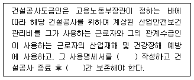
- 매월, 6개월
- 매월, 1년
- 2개월 마다, 6개월
- 2개월 마다, 1년
(정답률: 63%)
103. 지반의 굴착 작업에 있어서 비가 올 경우를 대비한 직접적인 대책으로 옳은 것은?
- 측구 설치
- 낙하물 방지망 설치
- 추락 방호망 설치
- 매설물 등의 유무 또는 상태 확인
(정답률: 67%)
104. 강관틀비계(높이 5m 이상)의 넘어짐을 방지하기 위하여 사용하느 벽이음 및 버팀의 설치간격 기준으로 옳은 것은?
- 수직방향 5m, 수평방향 5m
- 수직방향 6m, 수평방향 7m
- 수직방향 6m, 수평방향 8m
- 수직방향 7m, 수평방향 8m
(정답률: 62%)
1⑤. 굴착공사에 있어서 비탈면붕괴를 방지하기 위하여 실시하는 대책으로 옳지 않은 것은?
- 지표수의 침투를 막기 위해 표면배수공을 한다.
- 지하수위를 내리기 위해 수평배수공을 설치한다.
- 비탈면 하단을 성토한다.
- 비탈면 상부에 토사를 적재한다.
(정답률: 75%)
106. 강관을 사용하여 비계를 구성하는 경우 준수해야할 사항으로 옳지 않은 것은?
- 비계기둥의 간격은 띠장 방향에서는 1.85m 이하, 장선(長線) 방향에서는 1.5m 이하로 할 것
- 띠장 간격은 2.0m이하로 할 것
- 비계기둥의 제일 윗부분으로부터 31m되는 지점 밑부분의 비계기둥은 3개의 강관으로 묶어 세울 것
- 비계기둥 간의 적재하중은 400kg을 초과하지 않도록 할 것
(정답률: 65%)
107. 다음은 산업안전보건법령에 따른 시스템 비계의 구조에 관한 사항이다. ( )안에 들어갈 내용으로 옳은 것은?
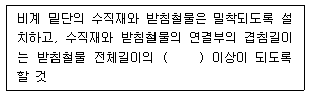
- 2분의 1
- 3분의 1
- 4분의 1
- 5분의 1
(정답률: 67%)
108. 건설현장에서 작업으로 인하여 물체가 떨어지거나 날아올 위험이 있는 경우에 대한 안전조치에 해당하지 않는 것은?
- 수직보호망 설치
- 방호선반 설치
- 울타리설치
- 낙하물 방지망 설치
(정답률: 65%)
109. 흙막이 가시설 공사 중 발생할 수 있는 보일링(Boiling) 현상에 관한 설명으로 옳지 않은 것은?
- 이 현상이 발생하면 흙막이 벽의 지지력이 상실된다.
- 지하수위가 높은 지반을 굴착할 때 주로 발생된다.
- 흙막이벽의 근입장 깊이가 부족할 경우 발생한다.
- 연약한 점토지반에서 굴착면의 융기로 발생한다.
(정답률: 50%)
110. 거푸집동바리 동을 조립하는 경우에 준수해야 할 기준으로 옳지 않은 것은?
- 동바리의 상하 고정 및 미끄러짐 방지조치를 하고, 하중의 지지상태를 유지한다.
- 강재와 강재의 접속부 및 교차부는 볼트ㆍ클램프 등 전용철물을 사용하여 단단히 연결한다.
- 파이프서포트를 제외한 동바리로 사용하는 강관은 높이 2m마다 수평연결재를 2개 방향으로 만들고 수평연결재의 변위를 방지할 것
- 동바리로 사용하는 파이프서포트는 4개이상 이어서 사용하지 않도록 할 것
(정답률: 69%)
111. 장비가 위치한 지면보다 낮은 장소를 굴착하는 데 적합한 장비는?
- 트럭크레인
- 파워셔블
- 백호
- 진폴
(정답률: 72%)
112. 건설공사도급인은 건설공사 중에 가설구조물의 붕괴 등 산업재해가 발생할 위험이 있다고 판단되면 건축 ⸱ 토목 분야의 전문가의 의견을 들어 건설공사 발주자에게 해당 건설공사의 설계변경을 요청할 수 있는데, 이러한 가설구조물의 기준으로 옳지 않은 것은?
- 높이 20m 이상인 비계
- 작업발판 일체형 거푸집 또는 높이 6m 이상인 거푸집 동바리
- 터널의 지보공 또는 높이 2m 이상인 흙막이 지보공
- 동력을 이용하여 움직이는 가설구조물
(정답률: 39%)
113. 콘크리트 타설 시 안전수칙으로 옳지 않은 것은?
- 타설순서는 계획에 의하여 실시하여야 한다.
- 진동기는 최대한 많이 사용하여야 한다.
- 콘크리트를 치는 도중에는 거푸집, 지보공 등의 이상유무를 확인하여야 한다.
- 손수레로 콘크리트를 운반할 때에는 손수레를 타설하는 위치까지 천천히 운반하여 거푸집에 충격을 주지 아니하도록 타설하여야 한다.
(정답률: 80%)
114. 산업안전보건법령에 따른 작업발판 일체형 거푸집에 해당되지 않는 것은?
- 갱 폼(Gang Form)
- 슬립 폼(Slip Form)
- 유로 폼(Euro Form)
- 클라이밍 폼(Climbing Form)
(정답률: 66%)
115. 터널 지보공을 조립하는 경우에는 미리 그 구조를 검토한 후 조립도를 작성하고, 그 조립도에 따라 조립하도록 하여야 하는데 이 조립도에 명시하여야할 사항과 가장 거리가 먼 것은?
- 이음방법
- 단면규격
- 재료의 재질
- 재료의 구입처
(정답률: 79%)
116. 산업안전보건법령에 따른 건설공사 중 다리건설공사의 경우 유해위험방지계획서를 제출하여야 하는 기준으로 옳은 것은?
- 최대 지간길이가 40m 이상인 다리의 건설등 공사
- 최대 지간길이가 50m 이상인 다리의 건설등 공사
- 최대 지간길이가 60m 이상인 다리의 건설등 공사
- 최대 지간길이가 70m 이상인 다리의 건설등 공사
(정답률: 76%)
117. 가설통로 설치에 있어 경사가 최소 얼마를 초과하는 경우에는 미끄러지지 아니하는 구조로 하여야 하는가?
- 15도
- 20도
- 30도
- 40도
(정답률: 69%)
118. 굴착과 싣기를 동시에 할 수 있는 토공기계가 아닌 것은?
- 트랙터 셔블(tractor shovel)
- 백호(back hoe)
- 파워 셔블(power shovel)
- 모터 그레이더(motor grader)
(정답률: 71%)
119. 강관틀 비계를 조립하여 사용하는 경우 준수하여야 할 사항으로 옳지 않은 것은?
- 비계기둥의 밑둥에는 밑받침 철물을 사용할 것
- 높이가 20m를 초과하거나 중량물의 적재를 수반하는 작업을 할 경우에는 주틀 간의 간격을 1.8m 이하로 할 것
- 주틀 간에 교차 가새를 설치하고 최하층 및 3층 이내마다 수평재를 설치할 것
- 길이가 띠장 방향으로 4m 이하이고 높이가 10m를 초과하는 경우에는 10m 이내마다 띠장 방향으로 버팀기둥을 설치할 것
(정답률: 53%)
120. 산업안전보건법령에 따른 양중기의 종류에 해당하지 않는 것은?
- 고소작업차
- 이동식 크레인
- 승강기
- 리프트(Lift)
(정답률: 58%)